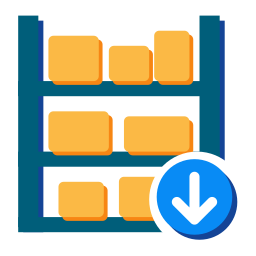

More apps by Terrabit
Other modules from the same publisher, built to work together. All apps →

Capacity-aware putaway for warehouse locations
Standard putaway rules send a product to a fixed shelf, whether the shelf still has room or not, and deliveries can reserve goods that were received but not yet put away. This module gives shelves a capacity, keeps the putaway within it and adds options on the operation type to control putaway and reservation.
Shelf capacity: on the location form (Inventory > Configuration > Locations), section Capacity, the field Max products (leaf) sets the maximum quantity a shelf can hold, counted in the product unit of measure, all products together. Zero means no limit.
Capacity and occupancy figures: each location computes Max products, Current quantity (on hand), Planned quantity (on move lines not yet done) and Occupancy (current / max, between 0 and 1). For a parent location, the maximum and the current quantity are the sum of its children. The fields are not shown in the views of this module; they are meant for reports or for a warehouse map.
Capacity-aware putaway: a shelf that is full, or would be full with the quantity already planned for it, is not proposed by the putaway. When a reserved line exceeds the free room of its shelf, the line is split: the shelf gets what fits and the rest goes to another shelf chosen by the putaway. Quantities in another unit (for example a dozen) are converted to the product unit. At validation, a transfer that would overfill a shelf is blocked with an explicit error. The standard storage category checks (weight, product and package capacities, mixing of products) still apply.
Search in sublocations: with the system parameter
deltatech_putaway_strategy.search_sublocation set to True, when the location
given by the putaway rule has sublocations, the putaway first proposes a sublocation
that already holds the product, then the first shelf, in alphabetical order, that has
room.
Prefer the shelf already holding the product: with the system parameter
deltatech_putaway_strategy.prefer_existing_stock_location set to True, the putaway
looks for the shelves under the incoming location that already hold free stock of the
product, even outside the location given by the rule, and proposes the one with the
largest quantity that still has room. If the rule's shelf already holds the product,
or no such shelf has room, the putaway rule applies as usual. The source shelf of an
internal transfer is never proposed as its destination. Off by default.
System parameters are set in Settings > Technical > System Parameters (developer mode).
Operation type options (Inventory > Configuration > Operation Types):
WH/Stock). Goods that were received but not yet put away on a shelf are not
allocated to sales orders; the shelves under it stay eligible.WH/Stock with lines on its shelves).deltatech_stock_removal_priority to exclude the root location from reservation.deltatech_putaway_strategy.prefer_existing_stock_location is True, the putaway looks for the
leaf locations under the incoming location (e.g. D1/S) that already hold the product and
proposes the one with the largest quantity that still has capacity, even when it is not under
the location given by the putaway rule. This covers products moved physically to another shelf
without updating their rule: the rule kept sending them to the old shelf, and
search_sublocation could not reach the new one because it only looks below the rule's
location. The rule's location still wins when it already holds the product, the incoming
location itself is ignored (goods not yet put away) and a full shelf falls back to the usual
strategy. Disabled by default, so existing installations keep their behaviour.putaway_exclude_location_ids context key, so a transfer from a shelf is
not sent back to that same shelf even when stock remains there.deltatech_stock_barcode, which is itself published as Production/Stable; manifestoo
check-dev-status rejects a module that is more mature than one of its dependencies. No
functional change.stock.group_stock_user) could not validate a transfer into a
location that has a capacity configured — it failed with
AccessError: You are not allowed to modify 'Inventory Locations' (stock.location),
pointing at Inventory/Administrator. current_products, max_products,
planned_products and occupancy_ratio are non-stored computed fields, and
_action_done / _split_by_putaway_capacity invoked their compute methods directly.
Outside the ORM's compute machinery the assignments inside those methods no longer just
fill the cache — they become a real write() on stock.location, which only the
inventory administrator may perform. Both call sites now invalidate the cache and let the
ORM compute on read instead, on a sudo() recordset (these are metrics derived from
quants, already read with sudo inside the compute, not business data).UserError, now reachable by stock users instead of being masked by an
AccessError._split_by_putaway_capacity, the exclude_move_line_id context key had no effect at all.
Reading now happens on the same recordset the context is applied to.Avoid Root Location on Reservation option, which was lost
during the 18.0 → 19.0 migration. The feature is made of two halves talking to
each other through the exclude_location_ids context key: this module produces
it in stock.move._action_assign, and deltatech_stock_removal_priority
consumes it in stock.quant._get_gather_domain. Only the consumer half was
migrated to 19.0 — the avoid_root_location_on_reservation field on
stock.picking.type and the context injection were missing, so the key was
never set and deliveries kept reserving stock straight from the warehouse root
location (lot_stock, e.g. D1/S) instead of leaving it for put-away._action_assign received moves from several operation
types at once.Upgrade note: the field never existed in 19.0, so every operation type has
it unset after the upgrade. Tick Avoid Root Location on Reservation again on
the delivery operation types that need it, otherwise the behaviour stays as-is.
The option also requires deltatech_stock_removal_priority to be installed.
Our 600+ apps on the Odoo Apps Store are used in Odoo implementations across Europe, the Americas, Asia and Africa — by companies we have never even met. That is the advantage of building modules that simply work.
Questions about this module, or need it adapted to your processes? Write to us — the developers who build it will answer.
Terrabit support →Other modules from the same publisher, built to work together. All apps →